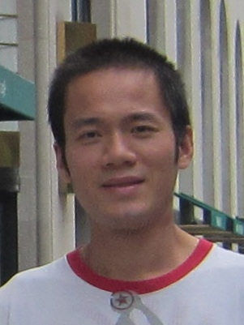

Ruoxi (Josh) Yang
Ruoxi Yang

Ph.D from RIT, Rochester,

N1: A brief cv in .pdf is here.
N2: Have been working on HAMR-related projects with the recording head development unit of Seagate Technology at Bloomington, MN since June 2012.
Email: rxy4200 at rit.edu
Tel: +1-952-402-7462
Affiliation: Seagate Technology
Address: 7801 Computer Ave S
- Member of OSA
- Reviewer for OE (OSA), Optics Letters, Applied Optics (OSA), JOSA B, JOSA A, Optics Materials Express (OSA), Applied Physics Letters, PTL (IEEE), Photonics Journal (IEEE), Journal of Nanophotonics (SPIE), Optical Engineering (SPIE), etc.
- Organizer of "SC2&3: Nano-focusing and Applications" in 2014's Progress In Electromagnetics Research Symposium (PIERS) in Guangzhou
- Design and demonstration of integrated nanophotonic and plasmonic devices
- Near-field Optics, optical antenna, subwavelength imaging beyond diffraction-limit
- Light media/matter interactions, metal optics, semiconductor optics, optical modulation/detecting mechanism
- Photonic bandgap and engineered dispersion
- R. Yang, P. Jones, T. Klemmer, H. Olson, D. Zhang, T. Perry, W. Scholz, H. Yin, R. Hipwell, J.-U. Thiele, H. Tang, and M. Seigler, "Far-field head-media optical interaction in heat-assisted magnetic recording," Applied Optics, vol. 55, no. 6, pp. 1241-1249, Feb. 2016.
- R. Yang, X. Huang, and Z. Lu, "Arbitrary super surface modes bounded by multilayered metametal," Micromachines, vol. 3, no. 1, pp. 45-54, Feb. 2012.
- R. Yang and Z. Lu, "Silicon-on-Insulator platform for integration of 3-D nanoplasmonic devices," Photonics Technology Letters, IEEE, vol. 23, no. 22, pp. 1652-1654, Nov. 2011.
- R. Yang, R. A. Wahsheh, Z. Lu, and M. A. Abushagur, "Efficient light coupling between dielectric slot waveguide and plasmonic slot waveguide," Opt. Lett., vol. 35, no. 5, pp. 649-651, Mar. 2010.
- R. Yang, M. A. Abushagur, and Z. Lu, "Efficiently squeezing near infrared light into a 21nm-by-24nm nanospot," Opt. Express, vol. 16, no. 24, pp. 20 142-20 148, Nov. 2008.
For full publication list, please visit my Google Scholar page.
Updated 02/2016
© 2013 Ruoxi Yang